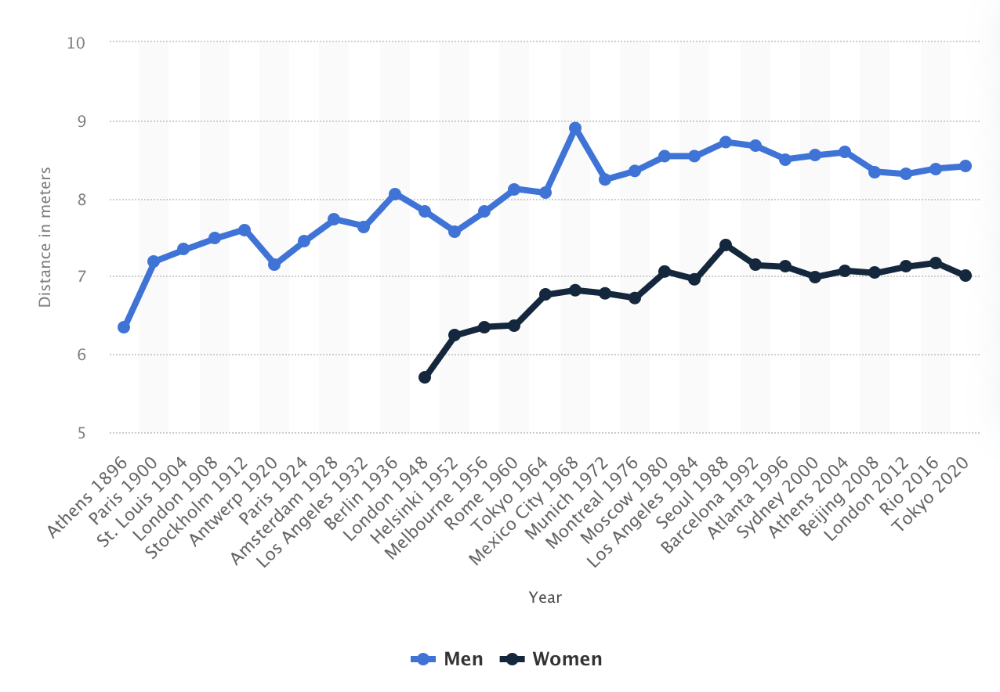
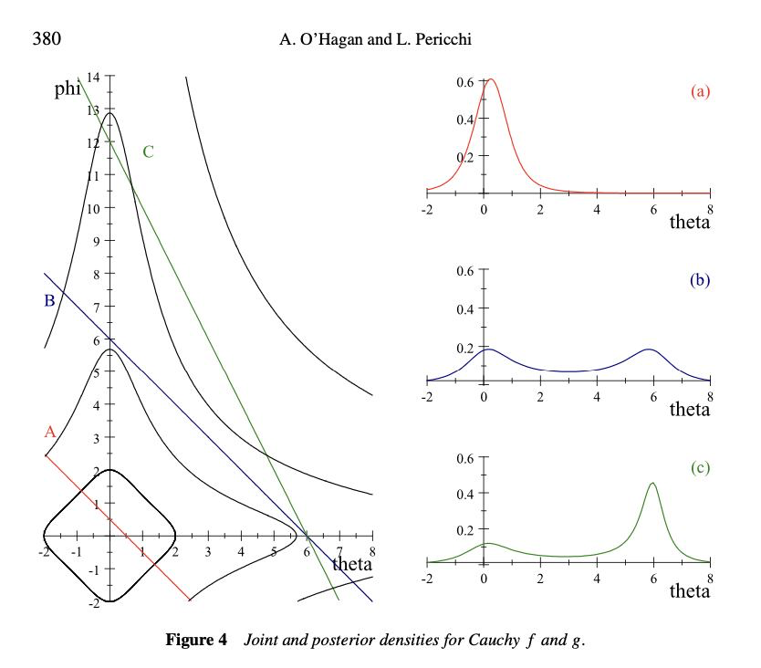

Here are two nice pieces of Bayesian logic observations that help explain everyday intuitions:
- When an outcome is the sum of two components then your belief about the contribution of the thinner-tailed component will be first increasing then decreasing in the realization of the outcome.
- When you observe an outlier in some process, which is the sum of multiple components, then:
- If the components are thin-tailed, then the outlier implies each of the components is elevated.
- If the components are fat-tailed, then the outlier implies just one of the components is elevated and the others are at their ordinary levels.
Too Much Good News is Often Bad News
In many cases a signal which is good news eventually starts to become bad news:
- The longer you wait for a bus the likelier it is to be about to arrive, until at some point it’s more likely that you’ve missed it.
- The lower the price the better the value until it becomes suspiciously cheap.
- If a drug is associated with a 5% higher rate of birth defects it’s probably a selection effect, if it’s associated with a 500% higher rate of birth defects it’s probably causal.1
- If an AB test shows an effect of +2% (\(\pm\) 1%) it’s very persuasive, but if it shows a an effect of +50% (\(\pm\) 1%) then the experiment was probably misconfigured, and it’s not at all persuasive.2
- When reading a biography each detail makes the the subject seem more impressive until you start to doubt the neutrality of the biographer.
In each of these cases I think it’s because the noise has a fatter-tailed distribution than the signal. As a consequence when you see a very-high observation you conclude it’s mostly noise, which implies that after a certain point an increase in the observed outcome becomes bad news instead of good news.
Outliers Usually Have One Cause, Not Many
This is a related but slightly different point. Scott Sumner argued “extreme events generally have multiple causes”, with a few examples:
- Italy’s very high COVID death rates are probably due to a number of different factors, not one.
- The great depression was due to “multiple policy errors, on both the supply side and the demand side.”
- Bob Beamon’s record long-jump in 1968 was probably a coincidence of multiple causes.3
I think Sumner is wrong in his generalization: extreme events typically have a single cause, not multiple causes. Formally (following Nair, Weierman and Zwart below), extreme draws from a sum of thin-tailed influences tend to have many causes, but extreme draws from a sum of fat-tailed influences tend to have one cause.
We often cannot observe the distributions of the individual components but we can observe the distribution of the final aggregate outcome, and if the final outcome is fat-tailed then at least some of the components must be fat-tailed.
I’m not sure about Italy’s COVID and the great depression, but for Bob Beamon’s jump in 1968 it looks like a non-Normal outlier, not the sum of orthogonal influences (see the spike on the blue line at right). Thus from this evidence we should expect, all else equal, that Beamon’s 8.9 metres was due to one big cause not many small ones.

Formalizing This
- We can summarize the theory with three observations.
- Suppose you observe a variable that is a sum of multiple components. Then:
-
- If components are IID and thin-tailed: outliers are due to many small causes (“conspiracy”).
-
- If components are IID and fat-tailed: outliers are due to a few big causes (“catastrophe”).
-
- If components are a mixture of thin-tailed and fat-tailed: low observations are due to the thin-tailed components, high observations are due to the fat-tailed components (“rejection”).
Literature. De Finetti wrote a paper in 1961, “The Bayesian Approach to the Rejection of Outliers”, giving a simple example where, with fat-tailed noise, a Bayesian will discount outliers.
There seem to be two modern strands of this literature that use somewhat different terminology:

Anthony O’Hagan and Luis Pericchi (2012) Bayesian heavy-tailed models and conflict resolution: a review. They give a number of conditions under which you get “conflict resolution” or “rejection of outliers”, broadly speaking when the noise has fatter tails than the signal. The critical condition is the relative speed of decline of the tails of the distributions of signal and noise. The illustration at right is very elegant, showing how the posterior will be bimodal when you have the sum of two heavy-tailed distributions.
Nair, Weierman and Zwart have a chapter “Catastrophes, conspiracies, and subexponential distributions” in their book “The Fundamentals of Heavy Tails”.
- Suppose you observe the sum of a set of \(N\) IID random variables. They discuss two polar ways in which your posteriors about the components will depend on the sum:
- If the components are heavy tailed you get the “catastrophe principle”: the probability that the sum exceeds some value \(t\) will be approximately equal to the probability that the maximum of \(N\) components exceeds \(t\), as \(t\rightarrow\infty\).
- If the components are light-tailed you get the “conspiracy principle”: the probability that the sum exceeds some value \(t\) \(t\) dominates the probability of the maximum exceeding \(t\), as \(t\rightarrow\infty\).
- Applications of the catastrophe principle: If a certain year has many earthquake deaths then probably there was one large earthquake, not many small ones. If a random group of people has a high average number of Twitter followers, probably one member of the group is a big outlier, and the others have an ordinary number.
- Applications of the conspiracy principle: if a random group of people has a high average height then probably each individual is tall.
- Note: non-monotonicity if and only if the sum is log-convex.
- Suppose we observe \(x\) which is the sum of \(v\) and \(u\). Tweedie’s formula will give us \(E[v|x]\) from the empirical distribution of \(x\), as long as the distribution of \(u\) is from an exponential family. If \(u\) is Normal with variance \(\sigma^2_u\) then we have: \[E[v|x] = x + \sigma^2_u \frac{d}{dx}\log f(x).\]
- There are two interesting bad news cases (i.e. non-monotonicity): \[\begin{aligned} \frac{dE[v|x]}{dx} &<0 && \text{($x$ is bad news about $v$)}\\ \frac{dE[v|x]}{dx} &>1 && \text{($x$ is bad news about $u$)}\\ \end{aligned}\]
- These correspond to: \[\begin{aligned} \frac{d^2}{dx^2}\log f(x) &< -\frac{1}{\sigma^2_u} && \text{(very log-concave)}\\ \frac{d^2}{dx^2}\log f(x) &> 0 && \text{(log-convex)}\\ \end{aligned}\]
- A nice observation: if the empirical distribution is log-convex at some point \(x\), then the expectation of the Normal component \(u\) must be decreasing at that point. (Note that log-concavity is a common way of characterizing light-tailed distributions.)
- Note: bus arrival times.
- Suppose the bus arrival time is \(a\), then at time \(t\) the expected wait time is \(E[a-t|a>t]\). We’ll assume \(a\sim N(0,1)\), then there are two interesting quantities: \[\begin{aligned} P(a>t) &= F(t) && \text{(probability bus has arrived)} \\ E[a|a>t]-t &= \frac{f(t)}{1-F(t)}-t && \text{(expected wait time)} \end{aligned}\]
- Here the expected wait time is uniformly decreasing in \(t\). However suppose that if we’ve missed the bus then the next expected arrival time is \(T\) (e.g. tomorrow). Then we have expected wait time: \[\begin{aligned} &F(t)T+(1-F(t))\frac{f(t)}{1-F(t)} - t\\ =& F(t)T + f(t) - t \end{aligned}\]
which will be decreasing, then increasing, then decreasing in \(t\).
You could supplement this model by saying you arrived at the bus-stop at time \(t\), and it’s now time \(t'\). then we’ll have terms like \(P(a>t'|(a<t)\wedge(a>t'))\), but I think the basic non-monotonicity will still hold.
Footnotes
Bradford-Hill: “the mortality of chimney sweeps from scrotal cancer was some 200 times that of workers who were not specially exposed to tar or mineral oils.”↩︎
This case is somewhat subtle: we generally think that treatment effects are fat-tailed, and we can be confident that noise is Normal because it’s the sum of many IID variables. However there’s an additional source of noise from implementation error which has even fatter tails than the distribution of treatment effects.↩︎
“While Beamon received mostly accolades, there also were detractors. The critics harped on the conditions — a following wind of 2.0 meters per second (the maximum allowable velocity for a record), a lightning fast runway and, most important, the thin air of Mexico City. Beamon’s defenders point out that the other competitors, which included the world record co-holders, had the same factors going for them and they didn’t jump close to Beamon.”↩︎